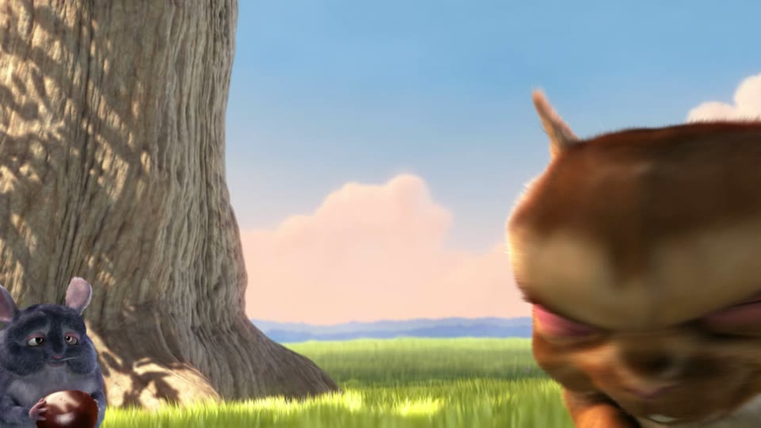
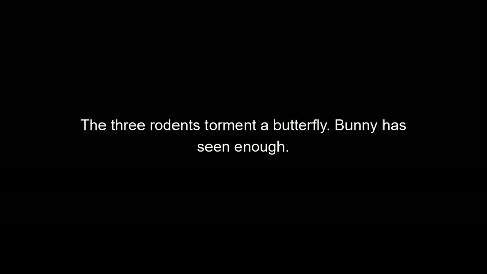
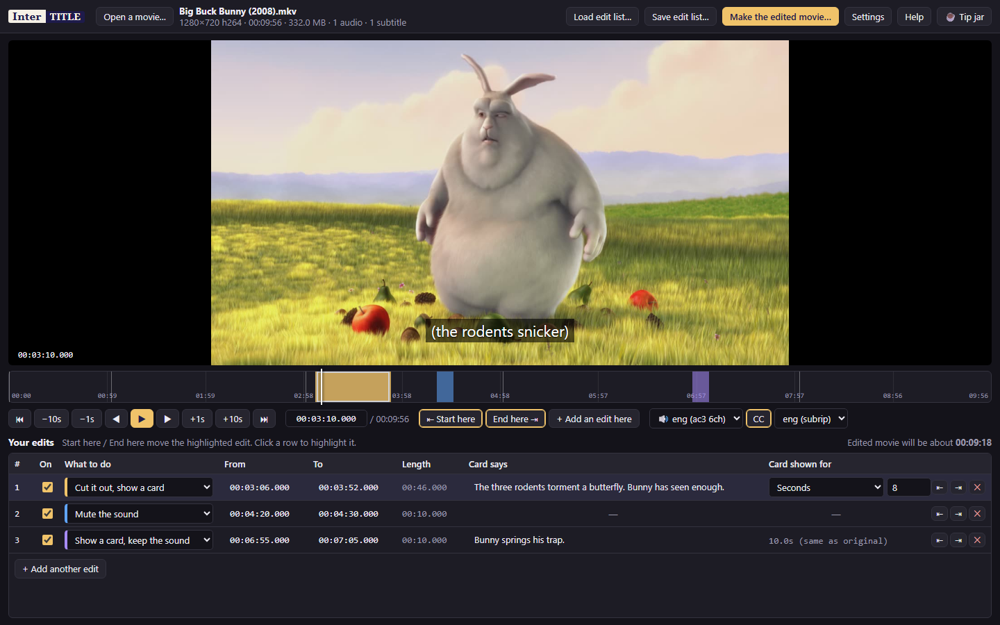
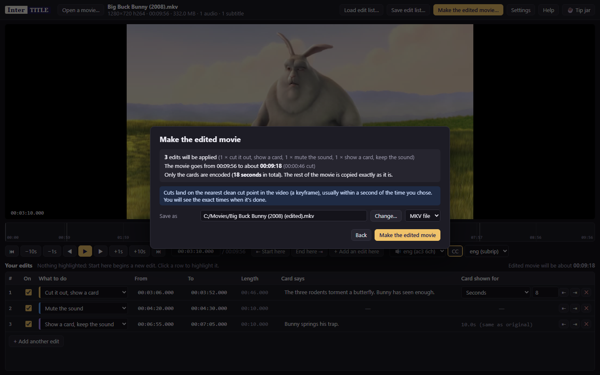

Intertitle edits the movies you already own. Cut the part you'd rather not watch, silence the line, and put up a card so the story still makes sense. Nothing is re-encoded, so it takes a couple of minutes even for a 4K film, and the picture is exactly as good as it was.
Here is Big Buck Bunny with one scene replaced. The three rodents are about to torment a butterfly; instead a card explains it and the film carries on. Making this took five seconds. Only the eight-second card was encoded. Turn the sound on to hear it play through the cut.
One small file. Install it, open a movie, and you're editing.
The macOS and Linux builds come from the same code but have not been tested on real machines yet. If something is off, please say so. Windows may warn that the installer is from an unknown publisher: it is not signed yet, choose "More info" then "Run anyway". On a Mac, right-click the app and choose Open the first time.
Intertitle does the thinking; two well-known open source tools do the heavy lifting. Install them once and Intertitle finds them by itself.
Reads every video format and draws the cards.
Windows download · Mac: brew install ffmpeg · Linux: sudo apt install ffmpeg
On Windows, the quickest way is to open a terminal and run winget install Gyan.FFmpeg.
Cuts the movie at clean points and joins it back together without touching the picture.
Download for Windows, Mac and Linux
On Windows you can also run winget install MoritzBunkus.MKVToolNix.
If Intertitle can't find them it says so at the top of the window, with a button to point at the programs. Prefer the command line? There is a tiny Windows, Mac and Linux tool that does the same job from a terminal.
You mark a stretch of the movie and choose one of four things to do with it.
The movie skips straight over it. Everything after moves up, subtitles included.
The part is gone and a card with your words takes its place, for a few seconds or exactly as long as the original.
The picture becomes a card while the dialogue and music carry on. Nothing changes length.
The picture stays, the sound goes quiet for exactly the stretch you marked.




No. The movie is cut at clean points and copied byte for byte. The only things encoded are the cards themselves, a few seconds of black with text on it. A 23 GB 4K film went through with 30 seconds of cards and took about four minutes, most of it copying.
It is under 2 MB because it doesn't carry its own video engine. It drives ffmpeg and MKVToolNix, which you install once. Both are free, open source, and used by most of the video tools you've heard of.
Text subtitles (the usual kind) are kept and retimed so they still line up after a cut. Picture-based subtitles from Blu-rays are left out if the running time changes, and Intertitle tells you before it starts. Chapters are kept too.
Video is stored in groups of frames that only start on a "keyframe", so a cut without re-encoding has to start on one. Intertitle picks the nearest, which is normally within a second. If a scene's edge matters to the frame, mark it a little wider.
Yes. Save edit list writes a small file next to the movie. Open the same movie later and the edits come back. The file is plain text, so you can share it with someone who has the same movie.
MKV, MP4, MOV, WebM, AVI, TS and M2TS, in any resolution up to 4K and beyond, with any audio (Dolby Atmos, TrueHD, DTS, AAC, and so on) and any number of subtitle tracks. The edited movie is saved as MKV, which keeps everything, or MP4 if you prefer.
Never. Intertitle only reads it and writes a new file called "your movie (edited)".
Yes, and open source under the MIT license. If it saved you an evening, there is a tip jar at the bottom of this page.
The same engine ships as intertitle-cli. Edit lists are plain CSV.
intertitle-cli "Movie.mkv" --edits "Movie.csv"
intertitle-cli "Movie.mkv" --remove 1:02:15-1:03:00 --mute 10:00-10:05 \
--card 20:00-21:00 "Rocky saved him in the lab." --out "Movie (edited).mkv"start,end,action,text,card_seconds,enabled
00:03:06.000,00:03:52.000,replace,"The three rodents torment a butterfly. Bunny has seen enough.",8,yes
00:04:20.000,00:04:30.000,mute,-,-,yes
00:06:55.000,00:07:05.000,text-keep-audio,Bunny springs his trap.,match,yesSource code, bug reports and older versions live on GitHub.
Intertitle is free and always will be. If it saved you an evening, a tip keeps the lights on.